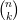
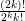
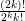
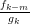
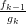

| Up | Next | Prev | PrevTail | Tail |
This package is a careful implementation of the Gosper and Zeilberger algorithms for indefinite and definite summation of hypergeometric terms, respectively. Extensions of these algorithms are also included that are valid for ratios of products of powers, factorials, Γ function terms, binomial coefficients, and shifted factorials that are rational-linear in their arguments.
Authors: Gregor Stölting and Wolfram Koepf.
This package is a careful implementation of the Gosper36 and Zeilberger algorithms for indefinite, and definite summation of hypergeometric terms, respectively. Further, extensions of these algorithms given by the first author are covered. An expression ak is called a hypergeometric term (or closed form), if ak∕ak-1 is a rational function with respect to k. Typical hypergeometric terms are ratios of products of powers, factorials, Γ function terms, binomial coefficients, and shifted factorials (Pochhammer symbols) that are integer-linear in their arguments.
The extensions of Gosper’s and Zeilberger’s algorithm mentioned in particular are valid for ratios of products of powers, factorials, Γ function terms, binomial coefficients, and shifted factorials that are rational-linear in their arguments.
The Gosper algorithm [?] is a decision procedure, that decides by algebraic calculations whether or not a given hypergeometric term ak has a hypergeometric term antidifference gk, i. e. gk - gk-1 = ak with rational gk∕gk-1, and returns gk if the procedure is successful, in which case we call ak Gosper-summable. Otherwise no hypergeometric term antidifference exists. Therefore if the Gosper algorithm does not return a closed form solution, it has proved that no such solution exists, an information that may be quite useful and important. The Gosper algorithm is the discrete analogue of the Risch algorithm for integration in terms of elementary functions.
Any antidifference is uniquely determined up to a constant, and is denoted by
Finding gk given ak is called indefinite summation. The antidifference operator Σ is the inverse of the downward difference operator ∇ak = ak - ak-1. There is an analogous summation theory corresponding to the upward difference operator Δak = ak+1 - ak.
In case, an antidifference gk of ak is known, any sum
can be easily calculated by an evaluation of g at the boundary points like in the integration case. Note, however, that the sum
|
| (16.96) |
e. g. is not of this type since the summand  depends on the upper boundary point n explicitly. This is an example of a definite sum that we consider in the next section.
Our package supports the input of powers (a^k), factorials (factorial(k)), Γ
function terms (gamma(a)), binomial coefficients (binomial(n,k)), shifted
factorials (pochhammer(a,k)= a(a + 1) (a + k - 1) = Γ(a + k)∕Γ(a)),
and partially products (prod(f,k,k1,k2)). It takes care of the necessary
simplifications, and therefore provides you with the solution of the decision
problem as long as the memory or time requirements are not too high for the
computer used.
(a + k - 1) = Γ(a + k)∕Γ(a)),
and partially products (prod(f,k,k1,k2)). It takes care of the necessary
simplifications, and therefore provides you with the solution of the decision
problem as long as the memory or time requirements are not too high for the
computer used.
The (fast) Zeilberger algorithm [?]–[?] deals with the definite summation of hypergeometric terms. Zeilberger’s paradigm is to find (and return) a linear homogeneous recurrence equation with polynomial coefficients (called holonomic equation) for an infinite sum
the summation to be understood over all integers k, if f(n,k) is a hypergeometric term with respect to both k and n. The existence of a holonomic recurrence equation for s(n) is then generally guaranteed.
If one is lucky, and the resulting recurrence equation is of first order
s(n) turns out to be a hypergeometric term, and a closed form solution can be easily established using a suitable initial value, and is represented by a ratio of Pochhammer or Γ function terms if the polynomials p, and q can be factored.
Zeilberger’s algorithm does not guarantee to find the holonomic equation of lowest order, but often it does.
If the resulting recurrence equation has order larger than one, this information can be used for identification purposes: Any other expression satisfying the same recurrence equation, and the same initial values, represents the same function.
Note that a definite sum ∑ k=m1m2f(n,k) is an infinite sum if f(n,k) = 0 for k < m1 and k > m2. This is often the case, an example of which is the sum (16.96) considered above, for which the hypergeometric recurrence equation 2s(n - 1) - s(n) = 0 is generated by Zeilberger’s algorithm, leading to the closed form solution s(n) = 2n.
Definite summation is trivial if the corresponding indefinite sum is Gosper-summable analogously to the fact that definite integration is trivial as soon as an elementary antiderivative is known. If this is not the case, the situation is much more difficult, and it is therefore quite remarkable and non-obvious that Zeilberger’s method is just a clever application of Gosper’s algorithm.
Our implementation is mainly based on [?] and [?]. More examples can be found in [?], [?], [?], and [?] many of which are contained in the test file zeilberg.tst.
The ZEILBERG package must be loaded by:
The gosper operator is an implementation of the Gosper algorithm.
using Gosper’s algorithm. This is only successful if Gosper’s algorithm applies.
Example:
This solves a problem given in SIAM Review ([?], Problem 94–2) where it was asked to determine the infinite sum
((2k - 1)!! = 1 ⋅ 3 (2k - 1) = ). The above calculation shows that the
summand is Gosper-summable, and the limit S = 1 is easily established using
Stirling’s formula.
(2k - 1) = ). The above calculation shows that the
summand is Gosper-summable, and the limit S = 1 is easily established using
Stirling’s formula.
The implementation solves further deep and difficult problems some examples of which are:
The Gosper algorithm is not capable to give antidifferences depending on the harmonic numbers
e. g. ∑ kHk = (k + 1)(Hk+1 - 1), but, is able to give a proof, instead, for the fact that Hk does not possess a closed form evaluation:
The following code gives the solution to a summation problem proposed in Gosper’s original paper [?]. Let
Then a closed form solution for
is found by the definitions
and the calculation
Similarly closed form solutions of ∑ k for positive integers m can be obtained, as well as of ∑ k for
and for analogous expressions of higher degree polynomials.
The extended_gosper operator is an implementation of an extended version of Gosper’s algorithm given by Koepf [?].
If it does not return a solution, then such a solution does not exist.
Examples:
The sumrecursion operator is an implementation of the (fast) Zeilberger algorithm.
with respect to n, applying extended_sumrecursion if necessary, see § 16.76.7. The resulting expression equals zero.
A simple example deals with Equation (16.96)37
The whole hypergeometric database of the Vandermonde, Gauß, Kummer, Saalschütz, Dixon, Clausen and Dougall identities (see [?]), and many more identities (see e. g. [?]), can be obtained using sumrecursion. As examples, we consider the difficult cases of Clausen and Dougall:
corresponding to the statements
and
(compare next section), respectively.
Other applications of the Zeilberger algorithm are connected with the verification of identities. To prove the identity
e. g., we may prove that both sums satisfy the same recurrence equation
and finally check the initial conditions:
The extended_sumrecursion operator is an implementation of an extension of the (fast) Zeilberger algorithm given by Koepf [?].
are rational functions with respect to both n and k. The resulting expression equals zero.
Examples:
which can be obtained automatically by
Similarly, we get
In the last example, the progam chooses m = 2, and l = 1 to derive the resulting recurrence equation (see [?], Table 3, (1.3)).
Sums to which the Zeilberger algorithm applies, in general are special cases of the generalized hypergeometric function
with upper parameters {a1,a2,…,ap}, and lower parameters {b1,b2,…,bq}. If a recursion for a generalized hypergeometric function is to be established, you can use the following REDUCE operator:
Therefore
establishes the Vandermonde identity
whereas
proves Dougall’s identity, again.
If a hypergeometric expression is given in hypergeometric notation, then the use of hyperrecursion is more natural than the use of sumrecursion.
Moreover you may use the REDUCE operator
with upper parameters upper= {a1,a2,…,ap}, and lower parameters lower= {b1,b2,…,bq}
in connection with hypergeometric terms.
The operator sumrecursion can also be used to obtain three-term recurrence equations for systems of orthogonal polynomials with the aid of known hypergeometric representations. By ([?], (2.7.11a)), the discrete Krawtchouk polynomials kn(p)(x,N) have the hypergeometric representation
and therefore we declare
and get the three three-term recurrence equations
with respect to the parameters n, x, and N respectively.
With the operator hypersum, hypergeometric sums are directly evaluated in closed form whenever the extended Zeilberger algorithm leads to a recurrence equation containing only two terms:
If the result is a list of length m, we call it m-fold symmetric, which is to be interpreted as follows: Its jth part is the solution valid for all n of the form n = mk + j - 1(k ∈ ℕ0). In particular, if the resulting list contains two terms, then the first part is the solution for even n, and the second part is the solution for odd n.
Examples [?]:
Note that the operator togamma converts expressions given in factorial-Γ-binomial-Pochhammer notation into a pure Γ function representation:
Here are some m-fold symmetric results:
These results correspond to the formulas (compare [?])
and
With the operator sumtohyper, sums given in factorial-Γ-binomial-Pochhammer
notation are converted into hypergeometric notation.
sumtohyper(f,k) determines the hypergeometric representation of
∑
k=-∞∞f
k, i. e. its output is c*hypergeometric(upper,lower,x),
corresponding to the representation
where upper= {a1,a2,…,ap} and lower= {b1,b2,…,bq} are the lists of upper
and lower parameters.
Examples:
For the decision that an expression ak is a hypergeometric term, it is necessary to find out whether or not ak∕ak-1 is a rational function with respect to k. For the purpose to decide whether or not an expression involving powers, factorials, Γ function terms, binomial coefficients, and Pochhammer symbols is a hypergeometric term, the following simplification operators can be used:
The use of simplify_combinatorial(f) is a safe way to decide the rationality for any ratio of products of powers, factorials, Γ function terms, binomial coefficients, and Pochhammer symbols.
Example:
From this calculation, we see again that the upper parameters of the hypergeometric representation of the Krawtchouk polynomials are given by {-n,-x}, its lower parameter is {-N}, and the argument of the hypergeometric function is 1∕p.
Other examples are
If you set
tracing is enabled, and you get intermediate results, see [?].
Example for the Gosper algorithm:
Example for the Zeilberger algorithm:
The following global variables and switches can be used in connection with the ZEILBERG package:
In the case of the Gosper algorithm, either a downward or a forward antidifference is calculated, i. e., gosper finds gk with either
respectively.
In the case of the Zeilberger algorithm, either a downward or an upward recurrence equation is returned. Example:
If a gosper command is issued, and if the Gosper algorithm is applicable, then the variable gosper_representation is set to the list of polynomials (with respect to k) {p,q,r,f} corresponding to the representation
see [?]. Examples:
If a sumrecursion command is issued, and if the Zeilberger algorithm is successful, then the variable zeilberger_representation is set to the final Gosper representation used, see [?].
The following messages may occur:
Example input:
gosper(factorial(k),k).
Example input:
gosper(factorial(k/2),k).
The term ratio ak∕ak-1 is not rational.
Example input:
gosper(k).
Example input:
sumrecursion(binomial(n,k)*binomial(6*k,n),k,n)
For this example a setting zb_order:=6 is needed.
Example input:
sumrecursion(binomial(n/2,k),k,n)
One of the term ratios f(n,k)∕f(n - 1,k) or f(n,k)∕f(n,k - 1) is not rational.
You can ignore this message that occurs with Version 3.5.
[1] Gosper Jr., R. W.: Decision procedure for indefinite hypergeometric summation. Proc. Natl. Acad. Sci. USA 75, 1978, 40–42.
[2] Koepf, W.: Algorithms for the indefinite and definite summation. Konrad-Zuse-Zentrum Berlin (ZIB), Preprint SC 94-33, 1994.
[3] Koornwinder, T. H.: On Zeilberger’s algorithm and its q-analogue: a rigorous description. J. of Comput. and Appl. Math. 48, 1993, 91–111.
[4] Nikiforov, A. F., Suslov, S. K, and Uvarov, V. B.: Classical orthogonal polynomials of a discrete variable. Springer-Verlag, Berlin–Heidelberg–New York, 1991.
[5] Paule, P. and Schorn, M.: A MATHEMATICA version of Zeilberger’s algorithm for proving binomial coefficient identities. J. Symbolic Computation, 1994, to appear.
[6] Problem 94–2, SIAM Review 36, March 1994.
[7] Strehl, V.: Binomial sums and identities. Maple Technical Newsletter 10, 1993, 37–49.
[8] Wilf, H. S.: Generatingfunctionology. Academic Press, Boston, 1990.
[9] Wilf, H. S.: Identities and their computer proofs. “SPICE” Lecture Notes, August 31–September 2, 1993. Anonymous ftp file pub/wilf/lecnotes.ps on the server ftp.cis.upenn.edu.
[10] Zeilberger, D.: A fast algorithm for proving terminating hypergeometric identities. Discrete Math. 80, 1990, 207–211.
[11] Zeilberger, D.: The method of creative telescoping. J. Symbolic Computation 11, 1991, 195–204.
| Up | Next | Prev | PrevTail | Front |